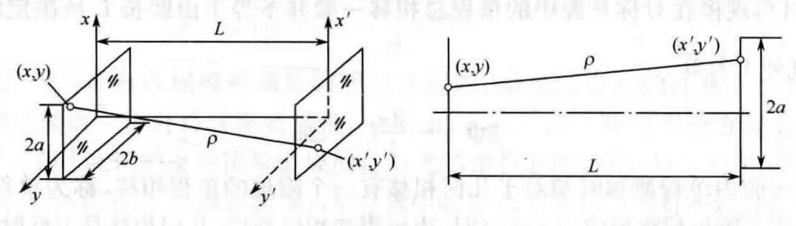
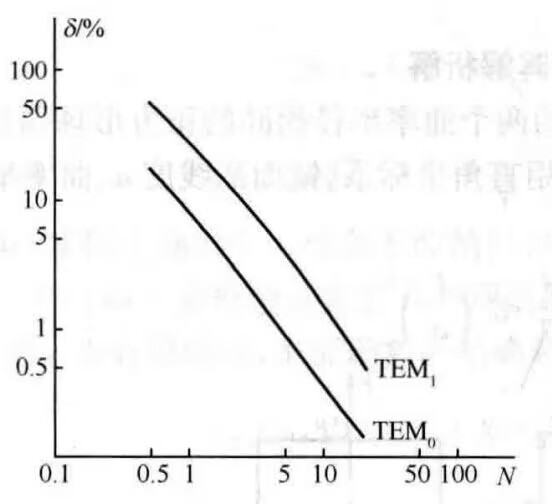
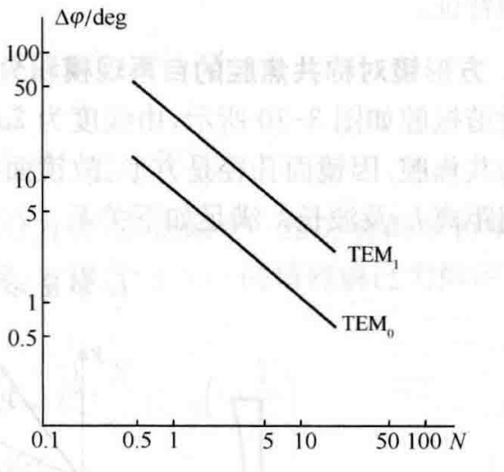

平行平面腔室历史上最早被采用的谐振腔，梅曼发明的第一台红宝石激光器就是采用平行平面腔.
至今尚未得到平行平面腔自再现模积分方程的精确解析解，只能使用近似方法求得其数值解.
福克斯和厉鼎毅首先提出用迭代法进行数值计算，并用这种方法求得了很多种类型谐振腔（如条形、方形、圆形镜面的平行平面腔等）的数值解，给出了自再现模的各种特征，包括场的振幅于相位分布曲线、单程损耗与单程附加相移曲线等，这种方法被称为福克斯-厉鼎毅（Fox-Li）迭代方法.
本节首先讨论矩形平行平面镜腔自再现模积分方程的具体形式，再介绍条形镜平行平面镜腔自再现模积分的Fox-Li迭代解法，并根据计算结果分析条形镜平行平面镜腔自再现模的特征.
条形镜是指在\(x\)坐标方向上镜的尺寸有限，而\(y\)坐标方向的尺寸无限，或反之，\(y\)方向有限而\(x\)方向无限.
其自再现模积分方程实际上变成一维的.
以如图所示的矩形平面镜腔为例，写出开腔自再现模积分方程的具体形式.

[设]矩形平面镜的边长为\(2a\times 2b\)，腔长为\(L\)，\(a,~b,~L,~\lambda\)间满足如下关系：
$$L\gg a,b\gg \lambda$$在图示坐标中，有：
$$r(x,y,x',y') = \sqrt{(x-x')^2 + (y-y')^2 + L^2}$$将\(r\)按照\(\frac{x-x'}{L},~\frac{y-y'}{L}\)的幂级数展开，且满足\(L\gg a,b\gg \lambda\)的条件，忽略高阶小量，近似为：
$$\begin{align} r(x,y,x',y') &= L\left[1 + \frac{1}{2}\left(\frac{x-x'}{L}\right)^2 + \frac{1}{2}\left(\frac{y-y'}{L}\right)^2\right]\\ &= L + \frac{1}{2}\frac{(x-x')^2}{L} + \frac{1}{2}\frac{(y-y')^2}{L} \end{align}$$代入开腔自再现模积分方程中，可得积分方程的核为：
$$K(x,y,x',y') = \frac{i}{\lambda L}e^{-ikL}e^{-ik[\frac{(x-x')^2}{2L} + \frac{(y-y')^2}{2L}]}$$从而得出开腔自再现模积分方程的具体形式为：
$$v_{mn}(x,y) = \gamma_{mn}\frac{i}{\lambda L}e^{-ikL}\int_{-a}^{+a}\int_{-b}^{+b}v_{mn}(x', y')e^{-ik[\frac{(x-x')^2}{L} + \frac{(y-y')^2}{L}]}\mathrm{d}x'\mathrm{d}y'$$上式对\(x\)与\(y\)两个坐标是对称的，可对其进行变量分离.
[令]
$$v_{mn}(x,y) = v_m(x)v_n(y)$$ $$\gamma_{mn} = \gamma_m\gamma_n$$于是有：
$$v_m(x) = \gamma_m\sqrt{\frac{i}{\lambda L}e^{-ikL}}\int_{-a}^{+a}v_m(x')e^{-ik\frac{(x-x')^2}{2L}}\mathrm{d}x'$$ $$v_n(y) = \gamma_n\sqrt{\frac{i}{\lambda L}e^{-ikL}}\int_{-b}^{+b}v_n(y')e^{-ik\frac{(y-y')^2}{2L}}\mathrm{d}y'$$上面两个方程的形式完全一样，只须求解其中之一.
其中任一方程就是条形镜腔的积分方程.
方形镜腔与条形镜腔的区别仅仅是维数的不同，求解方程的方法与结果都是相同的.
迭代法是指利用迭代方程或其简化形式：
$$u_{j+1} = \iint Ku_j\mathrm{d}s'$$首先假设在某一镜面上存在一个初始的场分布\(u_i\)，将其代入迭代方程，计算在腔内径第一次渡越而在第二个镜面上生成的场\(u_2 = \iint Ku_1\mathrm{d}s'\)；
再将\(u_2\)归一化，即取\(|u_2|_\max = 1\)，此后代入迭代公式，计算在腔内经第二次渡越后在第一个镜面上生成的场\(u_3 = \iint Ku_2\mathrm{d}s'\)；
如此反复运算，当\(j\)足够大时，\(u_j\)能够满足自再现条件：
$$u_{j+1} = \frac{1}{\gamma}u_j,\quad u_{j+2} = \frac{1}{\gamma}u_{j+1},\quad \cdots$$其中\(gamma\)为同一个复常数.
这说明场分布不再发生变化，形成了稳定的自再现模.
在迭代法计算中，当达到稳定状态（求出自再现模）后，就可以计算自再现模的单程衍射损耗与单程相移.
在对称开腔情况下，仅需对腔内单程传播进行计算.
计算结果表明：对于\(m,~n\)一定的横模，无论是条形镜腔或圆形镜平行平面腔，其单程功率损耗的大小都是Fresnel数\(N = a^2/L\lambda\)的函数.
条形镜平面腔中，基模与一阶模的单程损耗与Fresnel数间的关系曲线如图所示：

由图可知：
单程相移的计算结果表明：当自再现模从一个镜面传播到另一个镜面时，单程总相移为：
$$\delta\Phi = -kL + \Delta\varphi$$条形镜平面腔中，基模与一阶模的单程附加相移与Fresnel数之间的关系如图所示：

由图可知：
由上述单程相移的计算结果，利用对称开腔自再现模的谐振条件，可计算条形腔自再现模的谐振频率：
$$\nu_{mnq} = \frac{c}{2\eta L}\left(q + \frac{\Delta\varphi_{mn}}{\pi}\right)$$计算结果表明：\(\Delta\varphi\)的数值一般只有几度或十几度，\(\frac{\Delta\varphi_{mn}}{\pi}\ll 1\)，与\(q\)值相比，完全可以忽略不计.
因此，对于条形镜腔，自再现模的谐振频率采用公式：
$$\nu_{mnq} = \nu_q = q\frac{c}{2\eta L}$$